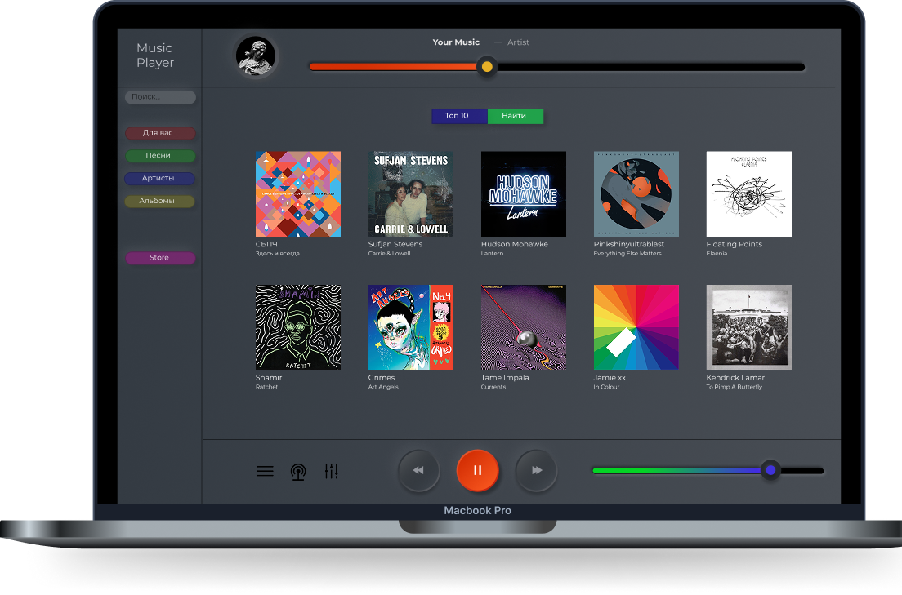

American company formed in 2002 in
Boston, Massachusetts


Music

About
MusicPlayer gives you instant access to millions of songs – from old favorites to the latest hits. Just hit play to stream anything you like.
Store
Нужна предыдущая версия MPlayer?
Вы можете скачать одну из предыдущих версий MPlayer, которая совместима с нужной вам версией операционной системы и определёнными устройствами. Выберите предыдущую версию MPlayer